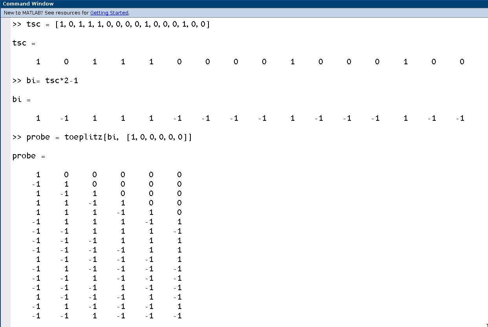
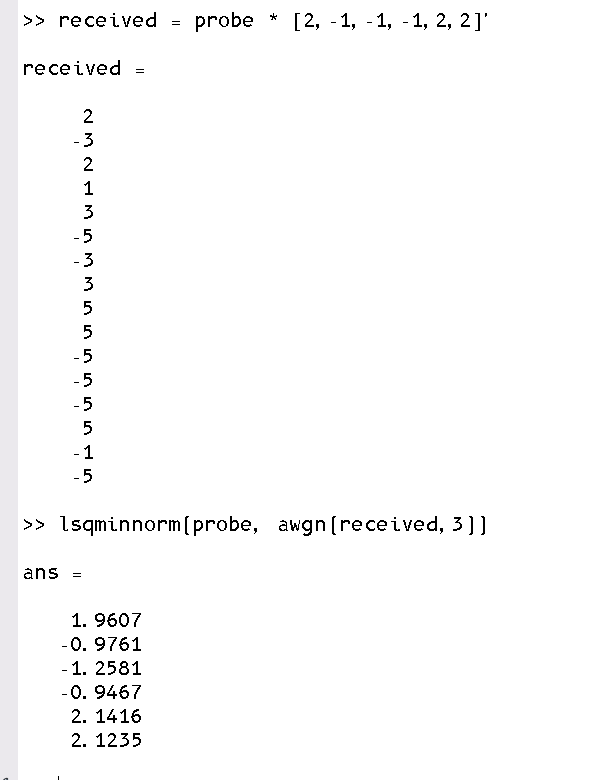
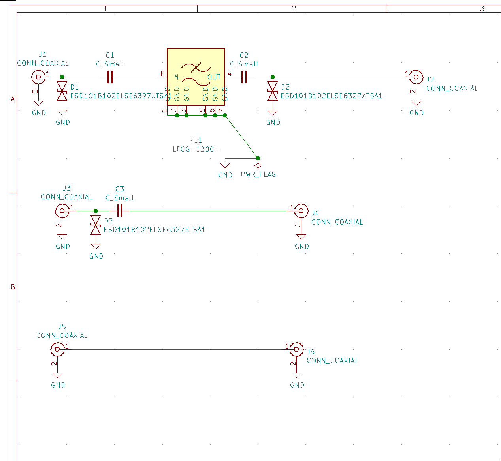
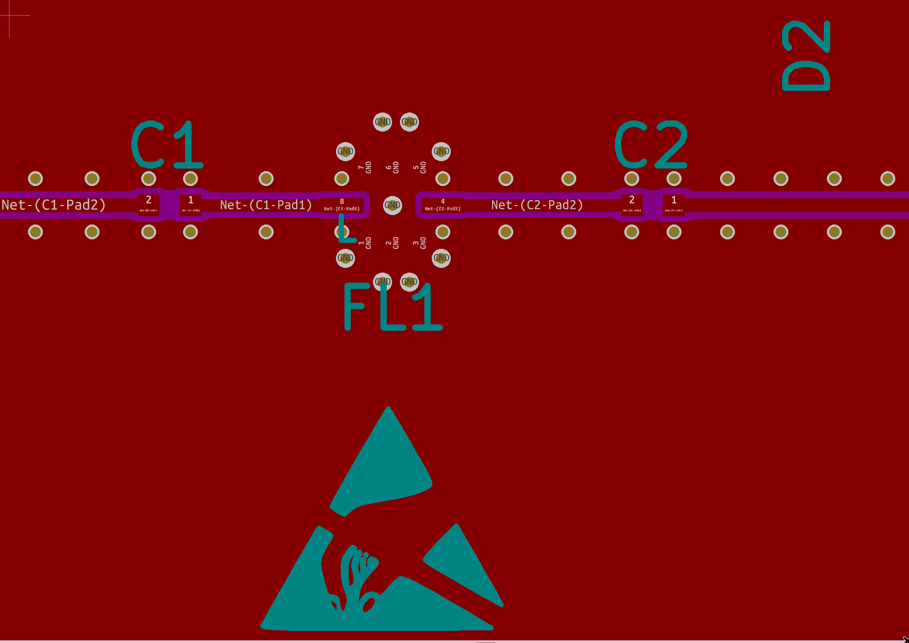
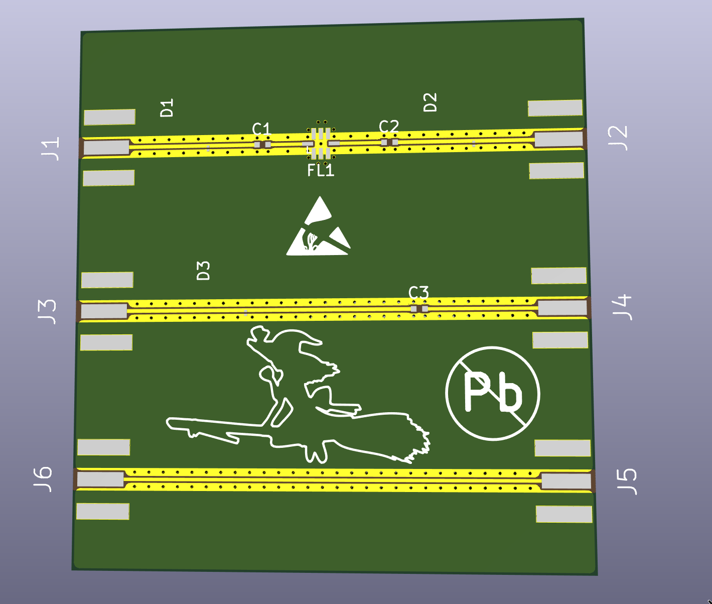
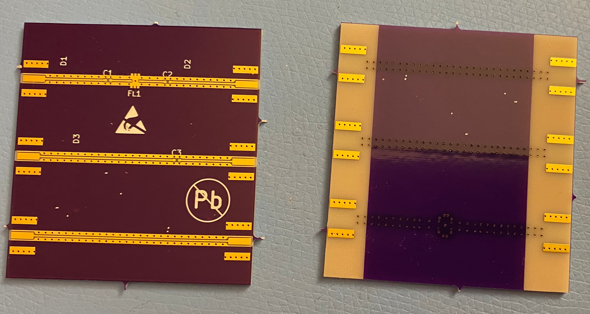
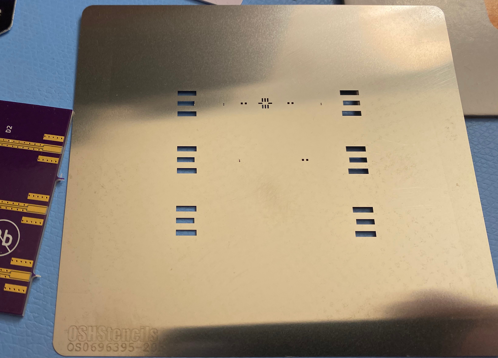

I’ve decided to put my 3-phase motor controller project on hold. I don’t really have the equipment/knowledge/experience to pursue it at the level I want to and I’ve come to terms that there’ll always be plenty of really interesting subjects for which this holds and that it’s better to do work where I can get interesting results done with what I have. Currently, those are my RF projects, so that’s what I’m spending time on.
Fun with MATLAB
I got a MATLAB Home License and the relevant toolboxes, which has been surprisingly useful since it provides tested implementations of channel models and modulators/demodulators. Previously, I had been trying to make physical-layer simulation software from scratch and validate it, and use it for developing receiver subcomponents. While I do appreciate what I’ve learned from making a channel/fading simulator, I never did quite understand how exactly to implement the Doppler model and I’ve been making significantly more progress now that I can use MATLAB and its Communications Toolbox as a source for golden/reference implementations. After all, people who work in industry use these tools all the time, so why shouldn’t I?
There’s a bunch of subcomponents in a full-featured continuous-phase modulation1 receiver:
- digital frontend: corrects for imperfections such as DC offset, I/Q imbalance, coarse frequency error
- feedforward channel estimation: estimates the channel impulse response based on known symbols
- channel shortening prefilter: concentrates the energy of the effective channel impulse response in the initial taps, without causing noise enhancement
- interference cancellation / space-time adaptive filters: nulls out co-channel interference
- trellis-style equalizer: given a channel impulse response, what’s the most likely sequence of symbols that led to the observed channel output?
- channel coding decoder: given the output symbols (or log-likelihood-ratios) from the equalizer, what bits were fed into the channel coder?
For each of those subcomponents, there’s plenty of subtle implementation details and even different mathematical approaches that can be used. For instance, the channel prefiltering can be done via with a linear prediction filter or by spectral factorization of the channel impulse response into an all-pass and minimum-phase component. The trellis-style equalizer can be expressed in the Ungerboeck and Forney formulations and I still don’t understand exactly why (or if) they’re equivalent or how exactly to construct the branch metrics or matched filter in front of the equalizer. Also, there’s per-survivor processing, in which the most-likely candidate sequence is continually used by the equalizer to revise the channel impulse response estimate.
Rather than jumping straight to trying to implement all of these, I’ve been playing around in MATLAB just trying to get the math to work (and comparing different approaches). For example, I had already implemented a GMSK modulator and used it to try correlation-based channel estimation in Python with some GSM midamble training sequences. In MATLAB I’ve been trying out least-squares channel estimation, understanding exactly how it works theoretically, looking at what coefficients go into which matrix/vector, and looking at its performance with various levels of noise. I’m going to do similar with the digital frontend, prefilter, equalizer, and channel decoder to gain sufficient theoretical background and intuition to go into the implementation phase.


Purple PCBs and dynamic range quandaries
I designed a PCB for the 1030MHz transponder receiver with a Mini-Circuits lowpass filter, coupling capacitors, ESD protection, and using edge-mount SMA connectors and grounded coplanar waveguide for the transmission lines. Kicad screenshots and photos of the unassembled boards and stencil are at the bottom of the page. I will populate it with components and have it tested on a friend’s vector network analyzer to verify that the impedance is close enough to 50 ohms.
A Mode-A/C/S receiver is subject to pretty strict requirements. It has to function over a large dynamic range, it has to preserve phase to decode the DPSK burst, and it has to preserve enough amplitude information for the receiver to compare the pulse amplitudes with the Minimum Triggering Level, and with each other (sidelobe suppression). Since the pulses are submicrosecond, I cannot use the actual AGC function of a standard RF-to-IQ-samples RFIC, and since phase must be preserved, a straighforward demodulating log amp is inapplicable.
Nevertheless, I came up with several candidate approaches:
- a downconverter whose output passes into a log amp with a separate limiter output (AD641 / AD8306 / AD8309), then ADC the log video (for amplitude) and ADC the limiter output (for phase)
- fast variable attenuator in the signal chain controlled by the FPGA, to allow for per-pulse “AGC”
- using a fully-integrated RFIC like AD9361 but adjusting the internal gain parameters for some intentional power-compression / limiting action, since i don’t need to preserve all the amplitude information, just enough to compare pulses with MTL and each other
- Doing the same except with discrete RF/IF amplifiers
Rather than deciding now which option to select, I’m going to try and make a quick-and-dirty prototype that intentionally does not meet the dynamic range requirements but that does incorporate all the relevant parts of the signal chain (RF frontend, downconverter and LO, IF filters, ADC, FPGA), in order to have something working such that I can start working on the actual demodulation code.





I’m trying to make a GSM/EDGE baseband because of the availability of test equipment and documentation, but there’s other systems that use continuous-phase modulations, such as aerospace telemetry and certain tactical data links.↩︎